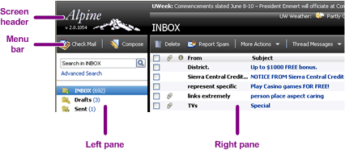
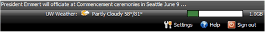
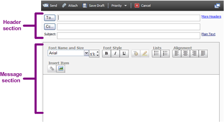

Alpine Quick Start
This page provides a quick overview of basic Alpine features and how to access them.
Main parts of the Alpine screen
The following figure shows a portion of the Alpine screen with the main parts identified.

Screen header

- The top portion provides links to University of Washington news and local weather. The top portion also displays error messages and comfirmation messages, such as confirming that you have moved or copied a message to a folder.
- The right side provides a bar graph representing the portion of your account's disk space allocation that is currently used.
- Below the bar graph are links for Settings (for customizing your mail), Help (for displaying this Help system), and Sign out.
Menu bar
The menu bar provides commands needed for each Alpine screen. The two leftmost commands, Check Mail and Compose, are the same in all Alpine screens. The other commands change according to which Alpine screen is dislayed.
Left pane
The left pane displays:
- Search. For a basic search, type a word in the search box and click the search icon. For more search options, click Advanced Search.
- Inbox and other default folders. Your inbox contains your mail as it arrives, you can use other folders to organize your mail.
- Contacts. Click to view and manage your contacts.
- Recent Folders. A list of the folders that you have recently accessed. You can control how many recent folders are listed (see Settings).
- View/Manage Folders. Click to view a list of all of your folders. From this list, you can add, delete, and rename folders.
Right pane
Depending on what you are doing, the right pane displays one of five things:
- Message lists. Display the contents of the folders in the left pane: Inbox, Drafts, Sent, and so forth. The message lists share a common format that allows you to view and manage your messages.
- The Compose window. Allows you to write and reply to messages.
- Your folder list. A list of all Alpine folders, both the standard Alpine folders such as Inbox, and any folders that you create. You can manage your folders from this list.
- Your contacts list. A list of all of the contacts that you have created. The contacts list functions as your address book.
- The Settings window. Allows you to customize the appearance and behavior of Alpine for your account.
Parts of the Compose window
In the Compose window, you can write, send, and reply to messages. The following figure shows the main parts of the Compose window.

- Header section (at the top). You use the header section to address the mail and control the text format.
- Message section (below the header). The message section is where you enter and format message text.
Basic Alpine Features
Viewing messages
When you first log in, your Inbox is displayed in the right pane, showing a list of your mail messages.
- By default, the list contains 25 messages per page. Click the arrows on the right side of the menu bar to move from page to page.
- You can sort messages in the list by clicking the column heads.
- You can drag and drop messages from the right pane to the folders in the left pane: click the name or email adderess in the From column to drag drop messages.
For more information, see Your Inbox.
New mail notification
You can control whether you hear a sound whenever a new mail message comes in. For more information, see Settings.
Reading mail
To read a message, click its Subject line. For more information, see Reading mail.
Sending mail
To send a message, click Compose on the menu bar. For more information, see Compose: sending mail.
Search
To search for a message, type a search string in the Search box, at the top of the left pane. Click Advanced Search for more search options. For more information, see Search.
Folders
Folders help you keep your mail organized. Default folders, such as Inbox and Junk, are always there. You can also create your own folders by clicking View/Manage Folders. For more information, see Folders.
Contacts
You can create a contact list,which is a list of addresses that are important or that you frequently use. Click Contact to add items to your contact list. For more information, click Contacts.
Checking for new mail
You can check for new mail from any Alpine window or folder without returning to your Inbox.
To check for new mail
- On the menu bar, click Check Mail. Alpine checks for new mail. If you have any new mail, a message appears in the middle of the screen header.
Keyboard shortcuts
Alpine supports many keyboard shortcuts so that you can access features without using the menus. For more information, see Settings.
Settings
You can control the appearance and behavior of many parts of the Alpine screen. For Overall appearance, the Display settings allow you to select:
- Color schemes
- The number of messages on each page
- The width of the text column in messages
- Row colors
- Page navigation
You can also return all settings to their default values. For more information, see Settings.
Trash
When you delete a message, it is moved to the trash. When you empty the trash or delete selected messages from the trash, they are removed permanently. You can also recover messages from the trash
To empty the entire contents of the trash
- In the left pane, next to Trash, click [Empty].
- Click Empty Trash to confirm.
This permanently deletes all of the messages in the trash.
To permanently delete selected messages from the trash
- In the left pane, click Trash.
- Select the box to the left of the messages that you want to delete.
- On the menu bar, click Delete Forever. Be sure that you have selected the right files; there is no confirmation screen for this action.
To recover messages from the trash
- In the left pane, click Trash.
- Select the box to the left of the messages that you want to recover.
- On the menu bar, locate the Move or Copy button. Skip this step if the one you want is already dislayed. If necessary, click the button and pull down the menu to select Move or Copy.
- On the menu bar, click to Folder and select the target folder from the list, or select More Folders to see a list of all folders. If you select More Folders, click the target folder in the list, and then click Copy or Move.
To set automatic trash emptying
You can control when the trash is automatically emptied and whether you get a confirmation screen before it is emptied. For more information, see Settings.